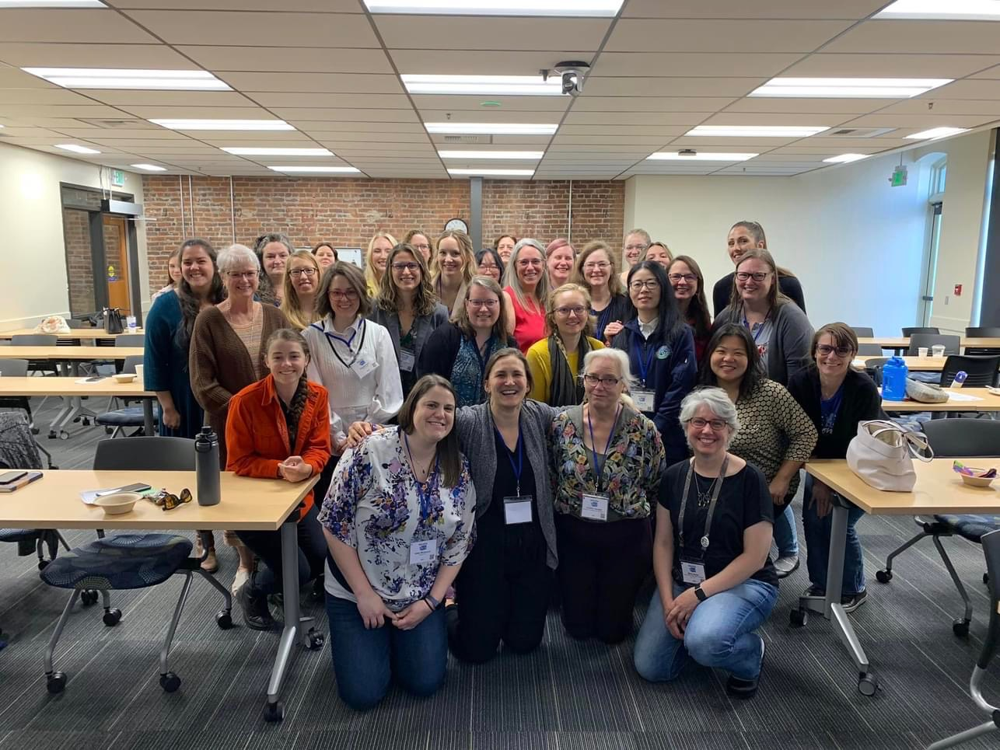

Aloha! I'm a 23-year-old who currently lives in Oahu, Hawaii.
While I spent my kindergarden recesses paging through atlas's, teenage years learning technology,
and university years studying geology to answer the question 'What happens when you touch lava?',
I find myself in love with the world of Geographic Information Systems (GIS).
Currently working at Joint Base Pearl Harbor-Hickam at the Depeartment of Defense, POW/MIA Accounting Agency.
At this position, I am a GIS Analyst with Amentum, supporting the SNA International contract.
On a daily basis, I get to create continuous work products representing those unaccounted for throughout SouthEast Asia.
With the great honor to provide maps towards that mission, I also get to work with team members through various fields (history, archeology, dentistry, etc), located in various locations
(Hawaii, DC, Nebraska, Asia, etc), providing hands on datasets, visualizations for family showcases, and field data collection use tools.
Previously I was working in Tangent, OR, I am the GIS Manager for Knife River Corporation, representing their Northwest Region.
As their first GIS Professional, I desgined, developed, and maintained GIS databases and map applications to support their buisness units and regional projects, primarily throughout Oregon and Washington State.
This position also allowed me to train new and exisiting GIS users, collaborate in creating company-wide GIS efforts with users across the nation, and build a company standard for the growth of spatial intelligence.
With great desire to give back to the growth of the GIS community, I was also an At-Large Board Member for the Washington GIS Associaiton (WAGISA) and an active member in additional GIS associations.
At the University of Washington, Tacoma, I recieved my Masters of Science degree in Geospatial Technologies.
With various skillsets obtained through the coursework, my capstone focused on multi-hazard mapping on the Hawaiian Islands.
Alongside my academics, I worked for the City of Renton as a GIS, Transportation Engineering Intern in the Public Works, Transportation Planning Division.
At Renton, I created, maintained, and visualized various datasets that assist the city in making data-driven decisions through ArcPro, ArcMap, ArcGIS Online, and other Esri applications.
Formally focusing on the Comprehensive Walkway Plan, also known as the Missing Sidewalks Project, with the vision to create a more multi-modal city.
In tandem, I was a GIS Extra Hire for the Pierce County, Surface Water Management division.
At Pierce County, I delineated HUC-16 watershed boundaries and spent time in the field analyzing stormwater infrastructure and flow directions through Field Maps and ArcPro.
Born and raised in Kent, Washington, where I previously attended Highline College and Kent-Meridian High School.
Through the Running Start program, I was able to recieve my High School Diploma in tandem to my Associate of Arts degree in Geology, in June 2020.
In May 2022, I recieved my Bachelor of Science degree in Geology at the University of Hawai'i, Hilo.
At this university, I gained introductory and geology based GIS skills, applying them to geological scenarios in ArcMap.
Following this course, I worked as a Geology Research Assistant where I lead a team in creating technology-based work products.
From GIS analyzation, to data entry, our research focused on finding tephra deposits on the Big Island of Hawai'i that had agricultural-grade black cinder.
Additionally I got the opportunity to be apart of Crack team, a group at UH-Hilo that worked in tandem with the United States Geological Survey, Hawaiian Volcanoes Observatory to conduct geodetic research about the islands deformation.
Hilo, HI
Disneyland, CA
Seattle, WA
Past trainings and conferences attended:
WAGISA Washington GIS Conference - Tacoma, WA - June 2024
ORURISA & ASPRS GIS in Action Conference - Portland, OR - April 2024
Knife River GIS Conference - February 2024
Imagery in Action - Esri MOOC - November 2023
Esri User Conference - San Diego, CA - July 2023
WAGISA Washington GIS Conference - Tacoma, WA - June 2023
Esri Survey123 Training - Olympia, WA - February 2023
WA ITE Safety Conference - Renton, WA - November 2023
GSA Joint Section Meeting - Las Vegas, NV - March 2022
Ongoing memberships:
The Geological Society of America (GSA)
Washington GIS Association (WAGISA)
American Association of Geographers (AAG)
Oregon & Southwest Washington Chapter of URISA (ORUISA)
Washington GIS Association

WA Women in GIS and Technology
Esri User Conference 2023
Career goals and desires:
Full-time position in the United States.
Working with GIS applications and data analysis.
Obtain a PhD in GIS, focusing in Geography and/or Geology focusing in GIS.
Teach GIS to a group of students.
Personal goals, desires, and interests:
Travel to and explore all of the Hawaiian Islands.
My favorite rocks are Orthoconglomerates.
My favorite minerals are Micas.
My favorite fruit is Lilikoi (passion fruit).
Sell my cookies and focaccia at a local farmers market.